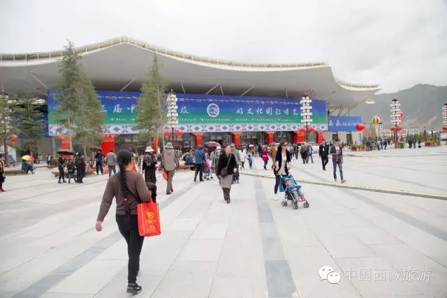

西藏日报
第三届中国西藏旅游文化国际博览会于9月10日晚开幕，11日起，所有展馆免费向游客和市民开放。

在开馆的第一天，1号展馆里就已人头攒动；展馆外安检处，人们还排起了长龙。藏族同胞们不约而同地穿着传统藏族盛装前来参观，游客们用各自的方式记录着藏博会的盛况。
在1号展馆里，7个展厅风格迥异，每一个展厅都有着它们不同的色彩与个性。
拉萨：科技之城
作为西藏“家族”里的老大，西藏的首府，这座城市的旅游业显然已步入成熟期——布达拉宫、大昭寺、人文民俗在这届展会上已不是他的重头戏。拉萨将科技兴城的手法在展厅里描绘得淋漓尽致。
从柳梧新区的规划展示到各项产业链的建设，新兴科技已融入各项产业，在提高了生产量的基础上，更多的改变了首府人民的生活方式。这为人们勾勒出了一幅拉萨未来发展的宏伟蓝图。
日喀则：南亚大通道
提起日喀则地区，就想起它1753公里的国境线，与尼泊尔、不丹、印度等国接壤。这些年尼泊尔游兴起，来到西藏旅游的游客如果时间允许，多半会考虑从日喀则地区出境游一趟尼泊尔。既然有口岸就一定有贸易，来自尼泊尔的琳琅满目的商品，就是通过日喀则地区，走向了全国。
日喀则的旅游业也在这届展会上从单一的景点介绍，拓宽到户外用品的展示，说到户外，必定会说到世界第一的高峰——珠穆朗玛峰。日喀则人喊出了骄傲的那句话：珠峰脚下日喀则！
昌都：茶马古道重镇
昌都是三江并流的主要区域，奇峰异洞、神山圣湖等造就了这里雄伟壮丽的自然景观；千百年厚重的历史文化积淀，形成了昌都独特的康巴文化底蕴。古老而神秘的茶马古道，是古代西藏高原与祖国内地进行政治、经济、文化交流的重要途径。
昌都展厅的布展以浓厚的地域文化为基础，设置了手工艺、服装、饮食、建筑等各方面的现场实景展示，使游客与市民更能一目了然地了解昌都。
山南：藏文化之源
西藏文化起源于山南，山南桑耶是吐蕃赞普牙帐所在地之一，赞普赤松德赞出生在这里。西藏历史上第一座宫殿——雍布拉康，第一座寺院——桑耶寺就诞生在山南。
本届展会上山南可谓搬来了所有的纺织工艺代表匠人，从服饰、鞋帽、包等方面经过现代工艺的精细与风格上的融合，形成了让人耳目一新的时尚丝织品。在展区，一台充满了劳动人民智慧的古老纺织机上，已有织成一段彩布，围观的游客络绎不绝，充满好奇心的人们在一旁跃跃欲试。
林芝：醉美林芝
本届展会林芝展厅主题为“人间净地 醉美林芝”。不必说盘踞在林芝的雅鲁藏布大峡谷，也不必说龙脊上的白色雪峰——南迦巴瓦，更不必说46.09%森林覆盖率……难怪，林芝被称为西藏的江南。在展厅的介绍中有这么一句话“畅游西藏从林芝开始”，它瑰丽的景致众多，吸引着全世界游人的眼光。
风景是林芝华美的外衣，人文民俗则是林芝的灵魂。在林芝展厅中，随处可见穿着林芝传统藏装的工作人员和专业演员，为人们演绎着西藏高原上绿色翠屏下明珠之城的别样风采。
那曲：藏药之都
要到拉萨，必经那曲，那曲出产的虫草更是闻名全国。除了有名的虫草，在本届的那曲展厅里陈设了传统藏药展台，这些藏药以不同颜色的包装区分，分别治疗常见现代病比如：心脑血管病、风湿、肠胃病等等。这些药并非是化学合成品，是由纯粹的名贵藏药磨制而成。
在展厅里还陈列着来自海拔6600米的念青唐古拉山桑登康桑冰川矿泉水，不过这样一瓶矿泉水的售价不菲。除了展示能让人们便捷服用的藏药与冰川水之外，在那曲大草原“天上草场”的衬托下，各类名贵药材与民族工艺品相映成辉，将那曲的人文与美景多角度诠释。
阿里：秘境古格
古格王朝早在三百年前就已神秘消失在历史的视野，但它的历史还熠熠生辉地写在壁画里。在阿里地区展厅的一角展出数十幅色彩鲜艳的壁画，仿佛还能从中捕捉到千年前鼎盛之时的古格王朝的模样。
在展厅里还介绍了最近热播的一部电影《我们诞生在中国》，该电影由导演陆川指导，其中高原精灵——藏羚羊的拍摄地就在阿里地区。通过电影，我们有幸目睹了藏羚羊从出生到茁壮成长为长跑健将的过程，给处于高寒地带的阿里地区带来了无限生机，画面温馨而令人动容。